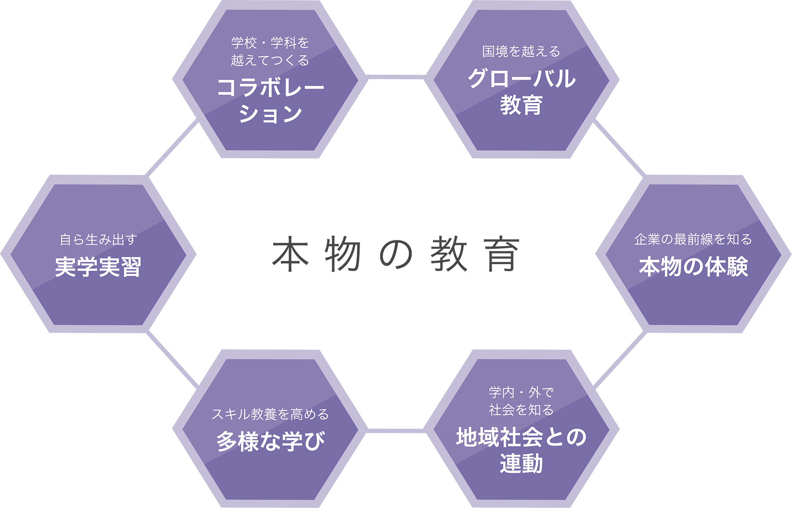
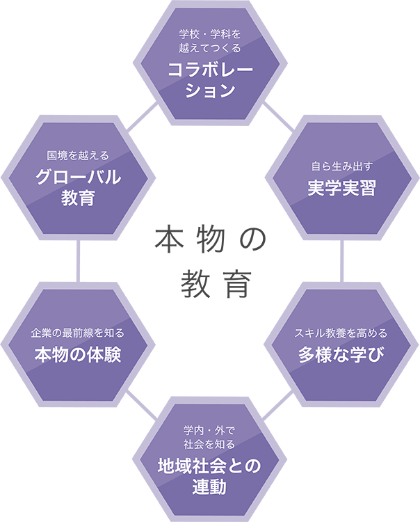

建学の精神／理事長挨拶／学院長挨拶／沿革／情報公開建学の精神／理事長挨拶／学院長挨拶
沿革／情報公開
建学の精神
昭和二十四年に設立された中部日本唯一の総合大学｢名城大学｣の創立者。初代総長、理事長を歴任。昭和三十四年に本学院の母体となる「名城大学付属東京テレビ高等技術学校」を創立し理事長に就任。本学院の教育理念となる〈建学の精神〉を示唆するとともに、わが国における専門学校教育の礎を築く。
理事長挨拶
学校法人田中育英会
総合学院テクノスカレッジ
普遍的な精神に
もとづく実践教育を
今後も当学院の
使命としてまいります
60年を越える長きにわたり、当学院は「個の尊重」および「地域や国際社会への貢献」にのっとった建学の精神のもと、創設当初より人間性、社会性、国際性を持った人材育成を重視しております。
「人の生涯は天職をまっとうするところに意義がある」の言葉が示すように、目先の知識や技術を身につけるのではなく、一生をかけて何事かを成し遂げる「天職」を見いだし、その職責をまっとうする力を養うことを目的に職業人教育を行ってまいりました。
その内容は学校の枠を超えて現場に飛び込み、「本物に学ぶ」教育を基本としています。そうした社会そのものといえる環境の中、当学院は本気で「社会を、世界を学ぶ」場所、本気で「自分を探す」場所であり続けてまいります。
高度情報化、急変する国際情勢、人口減少や人生100年といった社会の新常識など、今後はまさに「誰も先が読めない時代」が続くものと思われます。未曾有の出来事の中で羅針盤となり得るものは、確固とした自分の軸を持った上で状況に柔軟に対応できる力、それを育てる普遍的な精神にもとづく実践教育に他なりません。
そうした教育を、これまでもこれからも変わらず続けていくことを当学院の使命としてまいる所存です。
学院長挨拶
学 院 長 亀 田 俊 夫
多様性の時代。
そのなかで、輝く人を育てる。
違う文化や価値観、その人ならではの考え方を尊重し、共にその先へ向かう。「多様性」という容量をもつことが、世界の潮流のひとつになりつつあります。
1959年に創立された総合学院テクノスカレッジは、早くからそのことを実践し、時代のニーズと呼応しながら、創造的な教育環境を築いて参りました。
32学科86コースを擁する、日本を代表する総合型専門学校で過ごす時間は、その人が本当に好きなことに向き合い、新しい視座を持ち、それを深めていく契機になることを確信しています。
総合学院テクノスカレッジ、東京工学院専門学校、東京エアトラベル・ホテル専門学校のすべての学科に大学コースがあり、4年間高度の専門を学び、高度専門士取得と大学卒業の学士を取得することができます。それぞれの分野で、第一線に立つ教職員と共に、あなたの新しい挑戦を応援します。
教育方針
専門学校の教育は実務教育であり、専門知識や技術・技能を学び即戦力として、仕事が出来るようにすることである。しかし、社会が求める人材は専門性だけではなく、人間としての総合力や人間力を兼ね備えた人材である。本学は専門性はもとより総合力、人間力にも力点をおいて教育しているのが特色です。
自分の興味や得意分野をしっかりと極めて、時代や社会のニーズに適合させることで、自らの人生を切り拓いていくための力です。
専門分野だけではなく、多方面にわたる知識や関心をもとに幅広い視野を持ち、バランスのとれた考えや柔軟な思考を支える力です。
主体性を持ち、他者と協働して課題解決に当たることができ、人脈を広げるといったコミュニケーションの源泉となる力です。
総合学院テクノスカレッジ 本物の教育
本物の施設や設備、プロと協働して行うプログラム、キャンパスを越えた企業や地域との交流など、総合学院テクノスカレッジでは本物の職業人へと成長するための「本物の教育」を実践しています。学生たちはさまざまなチャンスを活かし、挑戦することで自分らしい成長を遂げていきます。
 沿 革
伝統、そしてさらなる発展へ
1959. 昭和三十四年、大学法人設置のテレビ技術学校として創立
| 1959 | 6/9 | わが国における文部省認定唯一のテレビ専門学校 「名城大学付属東京テレビ高等技術学校」設立(文京区後楽園校舎) |
|---|---|---|
| 1960 | 11 | 創立者 田中寿一先生 逝去 |
| 1965 | 7 | 「学校法人田中育英会」設立 名城大学より独立 |
| 10 | エコール・サントラール電子技術学校（フランス パリ）と姉妹校協約成立 | |
| 1966 | 3 | 無料職業紹介事業許可 |
| 4 | 「東京テレビ工学院」に校名改称 | |
| 1967 | 8 | 電気工事士養成施設指定許可（通産省） |
| 1968 | 3 | 第2級無線技術士予備試験免除許可（郵政省） |
| 1969 | 4 | 「東京工学院」に校名改称 |
| 6 | 渋谷区代々木に新校舎完成、移転 | |
| 1971 | 12 | 第1級無線通信士予備試験免除許可（郵政省） |
| 1975 | 7 | 専修学校法案が国会で可決、7月11日公布 |
1976. 専修学校法施行にともない、いち早く専門学校の認可を受ける
| 1976 | 1 | 専修学校制度施行 |
|---|---|---|
| 9 | 専修学校制度が確立、いち早く専門学校許可を受ける 東京工学院を「東京工学院専門学校」に校名改称 国際日本語学科を分離独立「東京工学院日本語学校」設立 東京ビジネス観光学院を「東京ビジネス専門学校」に校名改称 |
|
| 1979 | 4 | 東京工学院専門学校 新宿校舎開校 |
| 1980 | 4 | 東京工学院専門学校 芸術系電子系実習棟竣工 |
| 1981 | 4 | 東京ビジネス専門学校 外国語関係学科を分離独立 「東京国際外語専門学校」設立 |
| 8 | 代々木第2校舎竣工 | |
| 10 | 新宿第2校舎竣工 東京ビジネス専門学校 代々木第2校舎に移転 （早稲田第1校舎取壊全館建替工事着工） |
|
| 1982 | 1 | 東京工学院専門学校 中華民国龍華工業専科学校と姉妹校の提携調印 |
| 4 | 東京ビジネス専門学校を「東京工学院ビジネス専門学校」に校名改称 東京国際外語専門学校を「東京工学院外語専門学校」に校名改称 みどりの村研修所開設 新宿第3校舎完成 東京工学院ビジネス専門学校 女子航空関係学科を移転 |
|
| 6 | 早稲田第1校舎建替工事完了 |
1983. 真の人間教育環境の創造をめざして総合学園体制を確立
| 1983 | 3 | 代々木第2校舎増築 代々木第3校舎完成 |
|---|---|---|
| 4 | 専修学校制度が確立、いち早く専門学校許可を受ける 東京工学院を「東京工学院専門学校」に校名改称 国際日本語学科を分離独立「東京工学院日本語学校」設立 東京ビジネス観光学院を「東京ビジネス専門学校」に校名改称 |
|
| 5 | みどりの村体育館完成 | |
| 1984 | 2 | 新宿第2校舎増築完成 |
| 4 | 東京工学院専門学校 電子工学研究科 第1級無線技術士予備試験免除許可（郵政省） |
|
| 12 | 東京工学院専門学校 高電圧実験室完成 | |
| 1985 | 3 | 西新宿校舎完成 |
| 4 | 東京工学院ビジネス専門学校を「東京ビジネス専門学校」に校名改称 | |
| 6 | 東京工学院外語専門学校校舎取得、移転（新宿区早稲田） | |
| 9 | 東京工学院専門学校第2校舎取得 | |
| 11 | 東京工学院女子航空専門学校を「東京エアトラベル専門学校」に校名改称 東京工学院外語専門学校を「東京ソフィア外語専門学校」に校名改称 |
|
| 1986 | 1 | 東京工学院専門学校 電気工学科（昼間部） 第2種、第3種電気主任技術者学校認定（通産省） |
| 7 | 米国ホバート・アンド・ウイリアムスミス大学と関連校提携調印 | |
| 1987 | 3 | 東京エアトラベル専門学校 中国東方航空公司と体験搭乗研修を締結 東京工学院専門学校（昼）サービス技術科3年課程 大学入学資格付与指定（文部省） |
| 1988 | 11 | 東京工学院専門学校第3校舎完成 |
| 1989 | 7 | 英国オックスフォード・ウルジーホール取得 |
| 1990 | 4 | 東京工学院専門学校・東京工学院情報専門学校・東京工学院芸術専門学校を「東京工学院専門学校」とし、新編成体制に入る 東京ビジネス専門学校・東京エアトラベル専門学校・東京ソフィア外語専門学校を「東京エアトラベル専門学校」とし、新編成体制に入る |
| 12 | 東京工学院専門学校 建築工学科建築設計コース 2級建築士・木造建築士受験資格認定（東京都） |
東京工学院専門学校／東京エアトラベル・ホテル専門学校 小金井新校舎に移転
| 1991 | 2 | インテリジェント・システム導入の総合学園校舎 東京都小金井市に完成 |
|---|---|---|
| 4 | 東京工学院専門学校／東京エアトラベル専門学校 小金井新校舎に移転 | |
| 10 | 創立30周年、小金井新キャンパス完成記念式典、盛大に開催される | |
| 1993 | 11 | 東京工学院校友会 第1回総会小金井校舎にて盛大に開催される |
| 2000 | 4 | 東京エアトラベル専門学校を「東京エアトラベル・ホテル専門学校」に校名改称 |
| 2005 | 4 | 東京工学院専門学校、東京エアトラベル・ホテル専門学校、 両校の呼称を総合学院｢テクノスカレッジ｣とする |
| 2008 | ブランディング・プロジェクト、スタート。新しいシンボルマークを導入 | |
| 2009 | アシアナ 採用指定校に認定される | |
| 2012 | 6/9 | 創立50周年記念式典、盛大に開催される |
| インテル・ミラノと教育プログラム提携 | ||
| 2013 | 「みどりの村」人工芝グラウンド完成 |